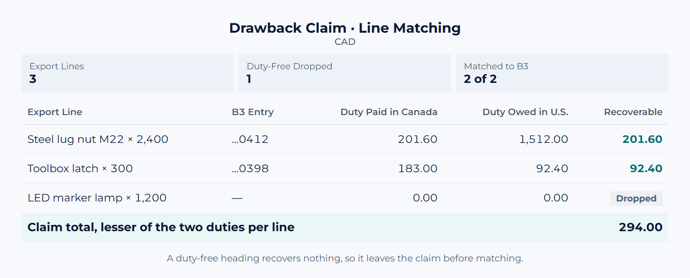

Case Study
Automating CBSA Duty Drawback Claims From SAP Business One
Duty paid on goods imported into Canada can be recovered when the same goods are re-exported. Matching thousands of export lines by hand made every claim slow and risky, so the process was rebuilt in SQL.
 Rishad Ahmed · November 2, 2026 · 1 min read
Rishad Ahmed · November 2, 2026 · 1 min read

The Problem
A Canadian importer that re-exports goods to the U.S. can claim back the duty it paid on import. But each export line has to be matched to the import entry (B3) that paid its duty, checked for eligibility, and calculated correctly. Done in spreadsheets, every claim took days and carried the risk of errors in a filing to CBSA.
What I Built
- An SAP extract of Canada-to-U.S. export sales.
- First-in, first-out matching of each export line to the B3 entry that paid its duty.
- Five eligibility gates, including dropping duty-free lines early: they recover nothing but would use up matching capacity.
- The CUSMA rule: each line is refunded at the lesser of the duty paid into Canada and the duty owed on entry to the U.S.
- Output in the claim format, ready to file through CARM.
The Result
A manual spreadsheet process became an end-to-end SQL pipeline: repeatable, auditable, and fast enough to file claims well inside the four-year limit.
Importing into Canada and selling into the U.S.? The Trade & Customs service covers HTS classification, landed cost and drawback claims. This article isn't customs advice; claims with real money at stake should be confirmed with a licensed customs broker.